Префектура Кагосима · Токуносима · природа и культура
Токуносима: остров быков, древнего леса и жизни по-соседски
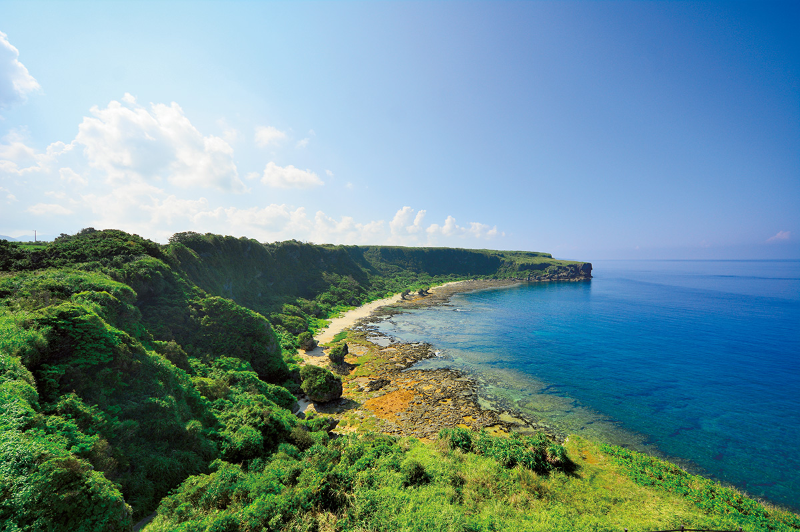
Токуносима лежит почти в центре архипелага Амами, в 45 км к юго-западу от Амами-Осимы. Здесь древний лес с амамийскими кроликами подходит вплотную к деревням, быки тренируются на пляжах, а гостю предлагают не курорт, а жизнь по местному укладу.
Остров
Лес, рифы и тысяча тонн упорства
26 июля 2021 года Амами-Осима, Токуносима, север Окинавы и остров Ириомотэ вошли в список всемирного природного наследия ЮНЕСКО за редкое биологическое разнообразие. Токуносима второй по величине остров архипелага Амами. Его окружность около 90 км, а на этом небольшом пространстве уживаются горы, холмы и плато из поднятого кораллового известняка. В горах на севере и в центре поднимаются густые леса, высшая точка острова гора Инокавадакэ (645 м). У подножий с давних времён растят сахарный тростник, и человеческое жильё стоит совсем рядом с дикой природой.
Остров делят три посёлка: Токуносима, Исэн и Амаги. Живёт здесь около 23 000 человек. Токуносиму называют островом долголетия и островом детей: именно отсюда родом долгожитель, попавший в Книгу рекордов Гиннесса как самый старый человек в мире. В деревнях много памятников периода Дзёмон, а под слоем вулканического пепла нашли даже каменные орудия палеолита.
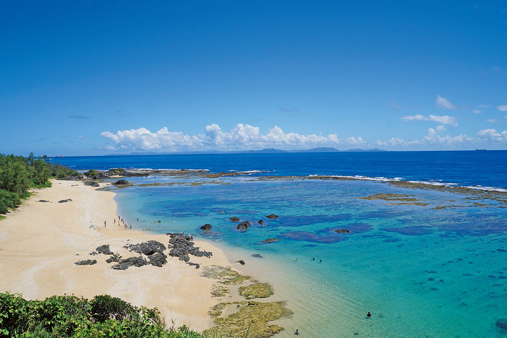
Море здесь тоже стоит поездки. На «Принс-бич» в Азэ над коралловым мелководьем лежит спокойная вода кобальтового цвета, и рыб видно издалека. Белый песок пляжа Кинэн-хама тянется на 2 км, и утром и вечером по нему нередко водят быков на тренировку или просто на прогулку. На побережье Сэнгэн, которое любят дайверы, почти наверняка встретишь морскую черепаху, а зимой к острову приходят выводить потомство горбатые киты.
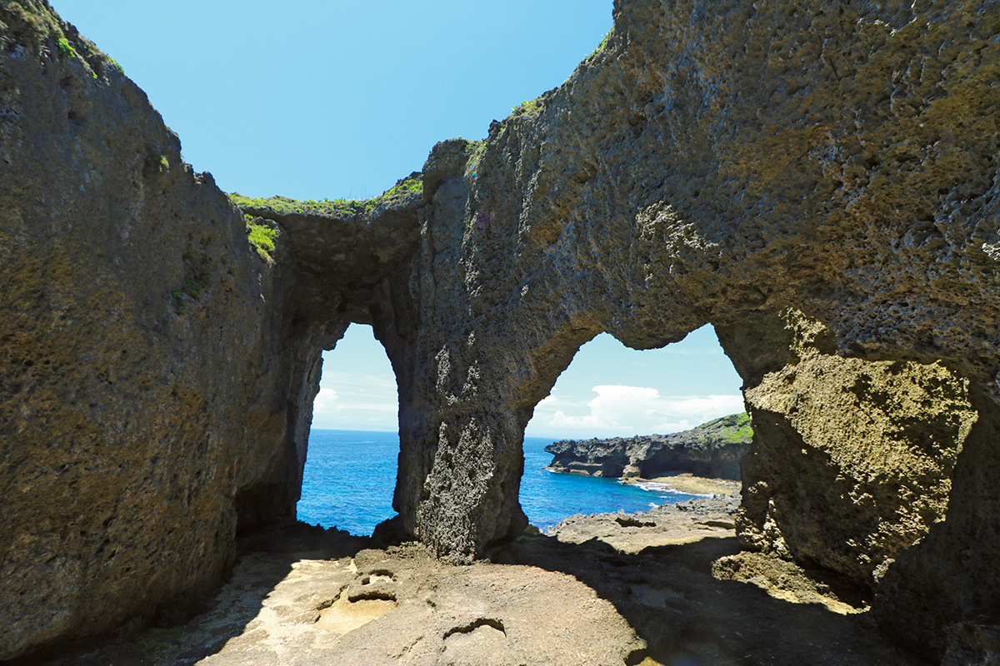
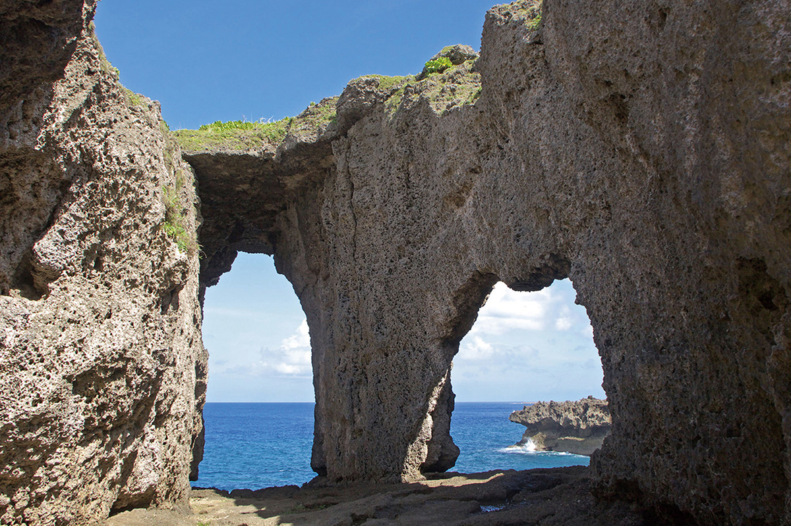
Экотур
Лес Хагэдакэ и деревня Агон
Чтобы понять Токуносиму, лучше всего пойти в лес с гидом. Лесная дорога Хагэдакэ проходит внутри территории всемирного наследия, и без сертифицированного гида архипелага Амами туда не пускают. Звание гида получают только те, кто прошёл курс о природе и культуре островов, безопасности и технике проводки.
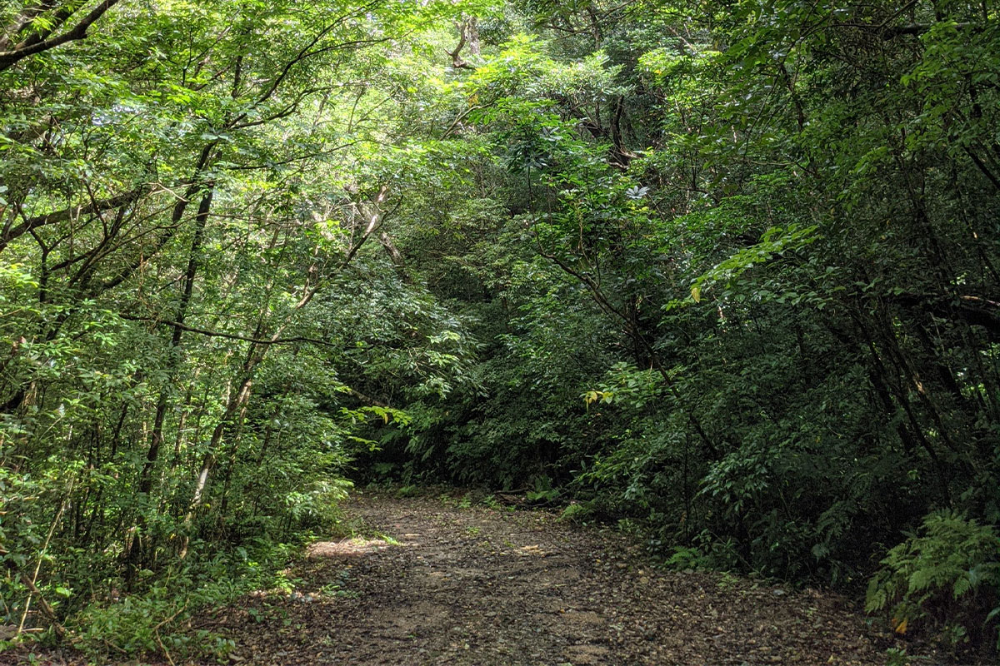
Вдоль дороги растут рощи окинавского дуба с огромными желудями, в каждый сезон цветёт что-то своё, и живёт много редких животных. Растений на острове около 1500 видов. На известняковой почве под деревьями растёт дикий имбирь танимура-аой, в лесу цветёт орхидея токуносима-эбинэ, а в полутени горного леса аризема токуносима-тэннансё. Остров известен и как кладовая эндемиков: здесь растёт, например, исчезающая аризема оо-амами-тэннансё.
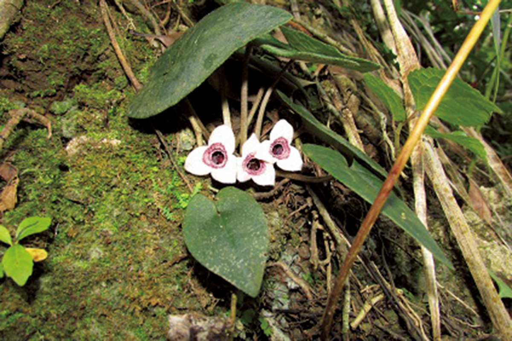
Животный мир похож на соседний Амами-Осиму: Токуносима долго была соединена с ним сушей. Общие обитатели двух островов амамийский кролик, длинношёрстная крыса и бородавчатый тритон, а только на Токуносиме живут токуносимская колючая мышь и эублефар оби-токагэмодоки. Многих зверей можно увидеть лишь ночью, поэтому гиды водят и ночные туры: по лесу, закрытому для обычных машин, медленно едут на автомобиле и высматривают кроликов и длинношёрстных крыс длиной около 30 см, живущих на деревьях.
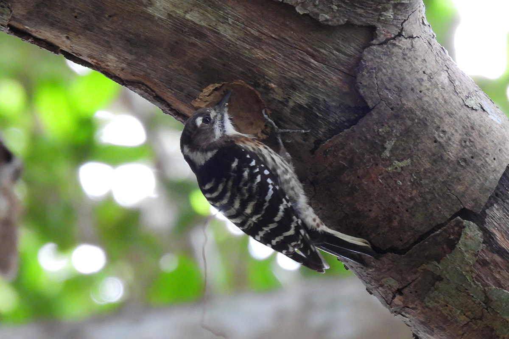
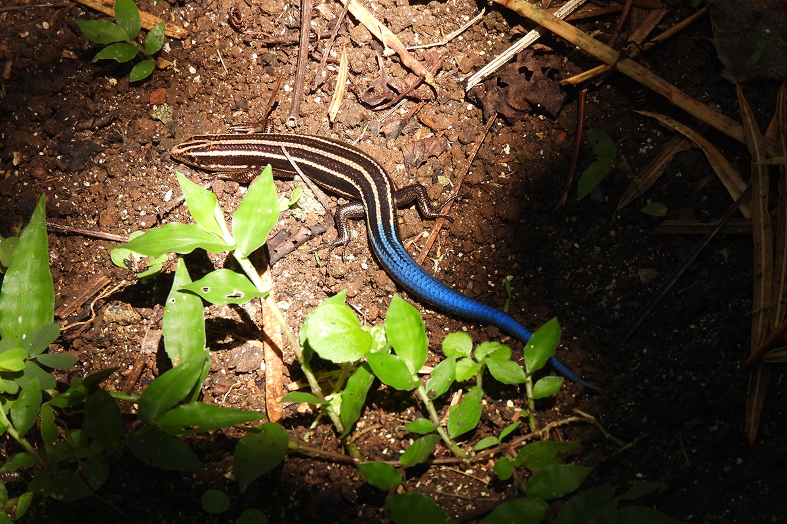
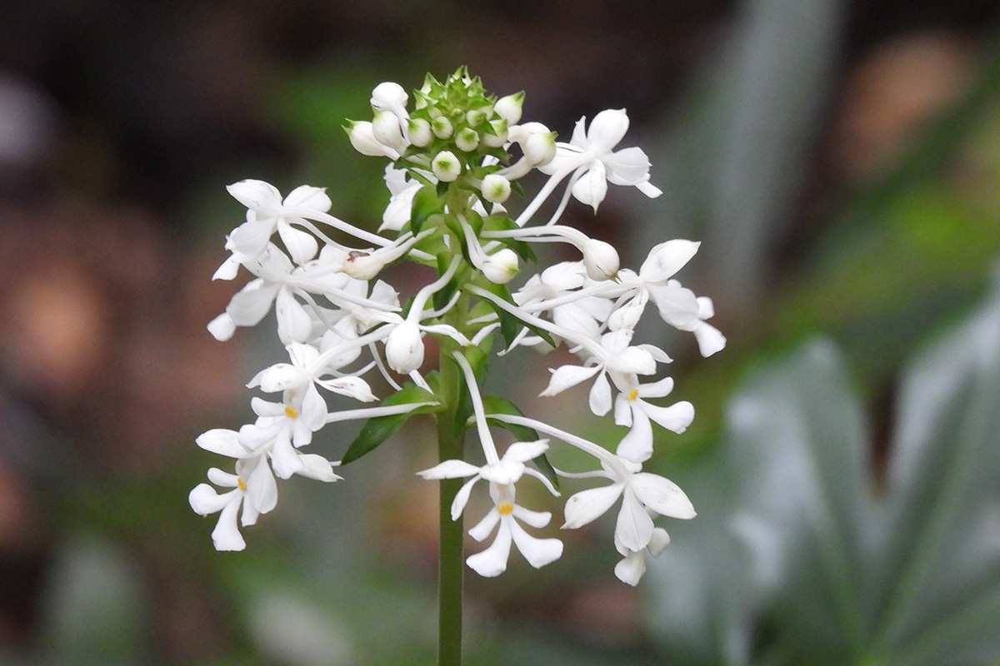
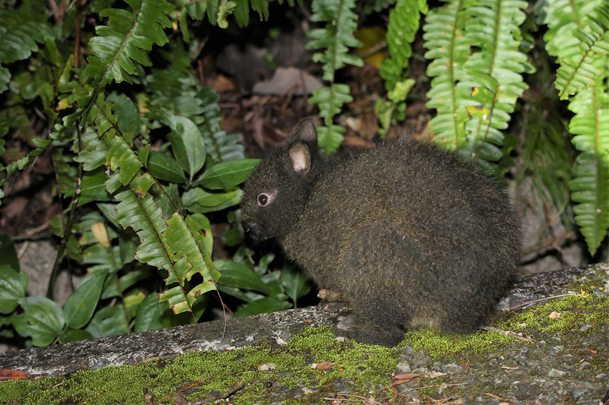
После леса едут в деревню Агон, до неё около 20 минут на машине. Когда-то здесь жила островная знать, поэтому дома в Агоне основательные. Если заглянуть во двор старого дома, видно, как смешались две культуры: ограды из кораллового камня и стенка-хинпун от злых духов пришли с Рюкю, а сад устроен по-японски. Так в одном дворе читается история острова, который принадлежал и королевству Рюкю, и княжеству Сацума. Экотуры проходят и по другим дорогам и деревням, так что маршрут можно собрать под тех животных или ту культуру, которые интересны именно вам. Каждая деревня по-своему живёт рядом с природой: в Тэтэ до сих пор поют песни посадки риса, а в Тобэ, богатой родниками, рассказывают предания о воде.
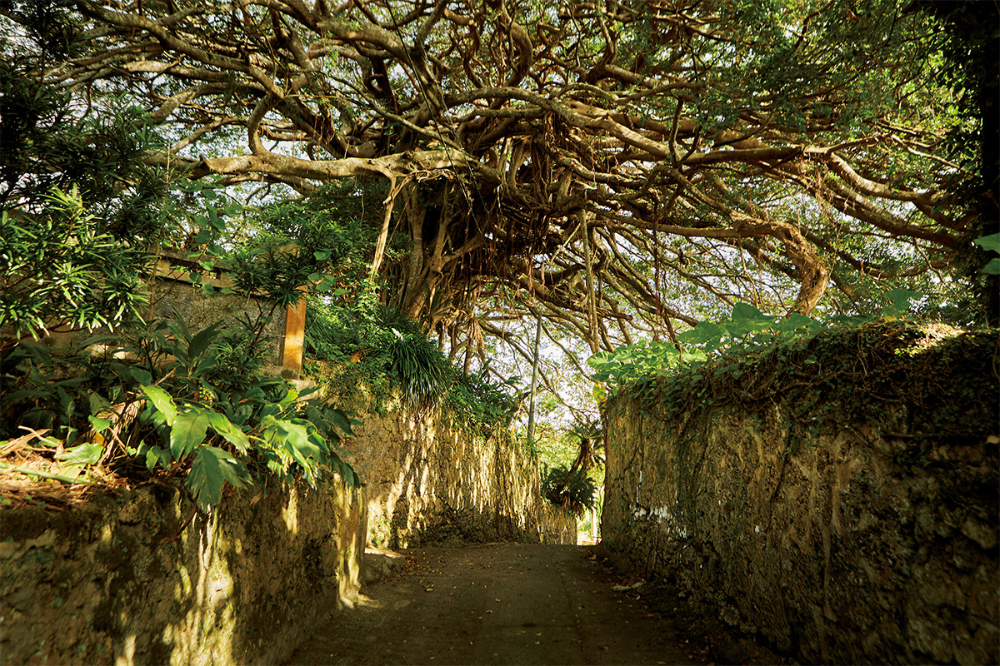
Баньяны растут по всему острову, но дерево в Агоне, которому, по преданию, больше 300 лет, самое мощное на Токуносиме. Корни-плети над каменными стенами из коралла выглядят как сама сила жизни. Считается, что в его ветвях живёт кэнмун, лесной дух островов Амами.
Баньян в Агоне
- Адрес
- префектура Кагосима, уезд Осима, посёлок Исэн, окрестности Агона
Познакомиться с амамийским кроликом без ночной вылазки можно в домике для наблюдения в посёлке Амаги: здесь показывают видео диких кроликов, чучела и книги о них.
Домик для наблюдения за амамийским кроликом
- Адрес
- префектура Кагосима, уезд Осима, посёлок Амаги, Тобэ, Ои, 479-2
- Телефон
- +81 997-85-5178 (мэрия Амаги)
- Часы работы
- 9:00–17:00, по предварительной записи накануне
- Выходные
- суббота, воскресенье, праздники
«Токуносима Нидзи-но кай» (экотуры)
- Телефон
- +81 997-86-3575
Совет экогидов Токуносимы
- Телефон
- +81 997-81-2010
Ночлег
«Дэнпаку»: пожить, как жили на острове
Токуносима предлагает путешествовать так, будто вы здесь живёте. Каждая деревня, на местном наречии «сима», хранит свою культуру, а сами островитяне говорят, что у них из поколения в поколение передаётся привычка общаться, советоваться и помогать друг другу. Этот дух взаимопомощи называют «юи».
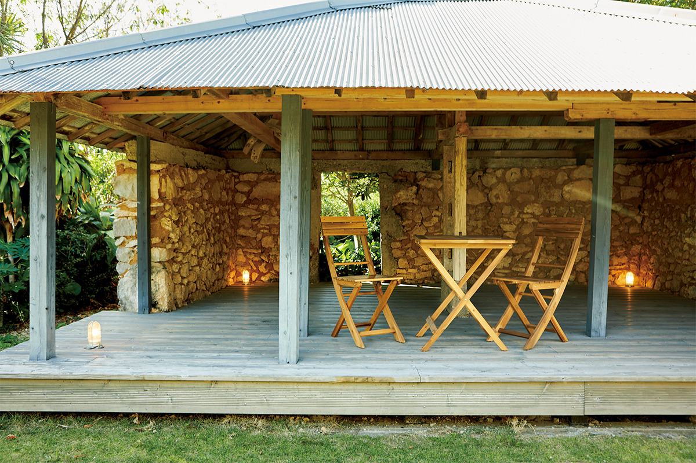
Лучше всего почувствовать этот уклад в домах «Дэнпаку». Их цель сохранить для будущего традиционную архитектуру и деревенскую культуру, а девиз звучит как «дом для разговора с островным временем». Это не курортный отель: нет ни постоянного персонала, ни ресторана. Зато всё время принадлежит только вам. Можно пойти в соседние закусочные и разговориться с местными, а можно купить островные продукты и готовить на кухне.
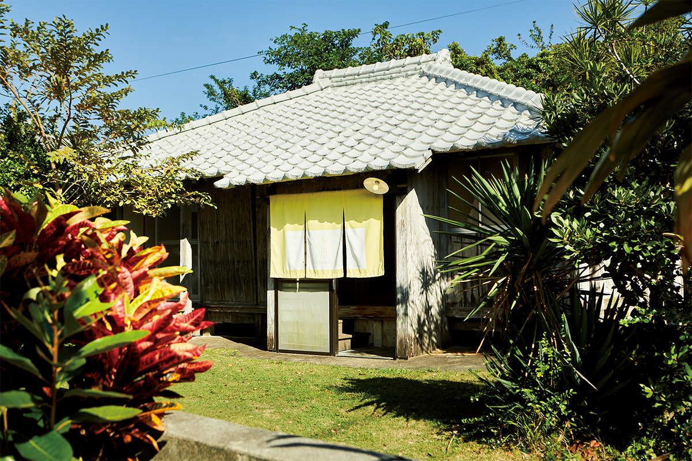
В 2023 году у «Дэнпаку» было 8 домов на Амами-Осиме, 2 на Какэроме и 6 на Токуносиме. Одни стоят у пляжей и красивых видов, но чтобы почувствовать традиции острова, выбирайте «дом с хижиной из кораллового камня». Он стоит в маленькой деревне на севере острова, рядом с ареной для боёв быков Мацубара, и в нём хорошо сохранилась архитектура Рюкю. Крыша из черепицы, скреплённой известью, а главный дом и флигель соединены коридором и открытой верандой.
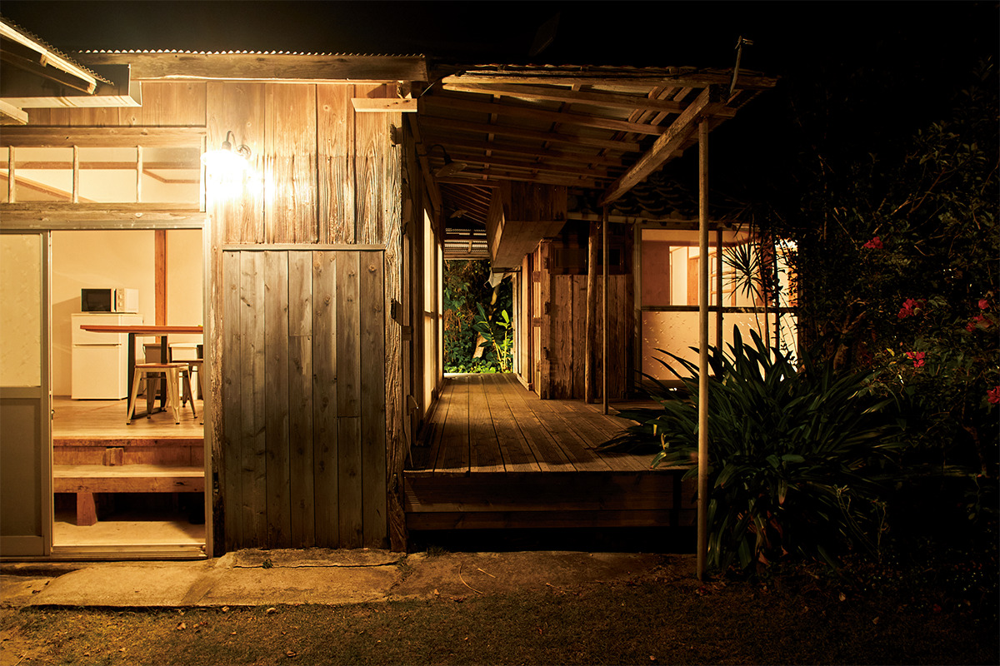
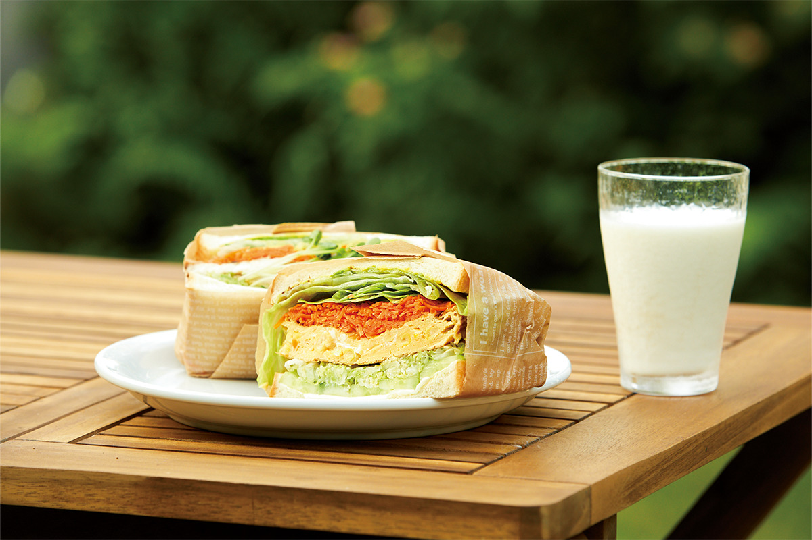
Пока гуляешь по деревне, жители окликают: «Откуда приехали?», подсказывают, где вкусно поесть и чем заняться. Именно эти разговоры с людьми и оказались главным, что дарит остров.
Другой дом, «дом со смотровой площадкой», стоит на обрыве в национальном парке у скалы Инно-дзёфута, в стороне от всего. Перед ним площадка с видом на бескрайний горизонт и скалы, выточенные волнами. Номера компактные, и это хороший выбор для пары.
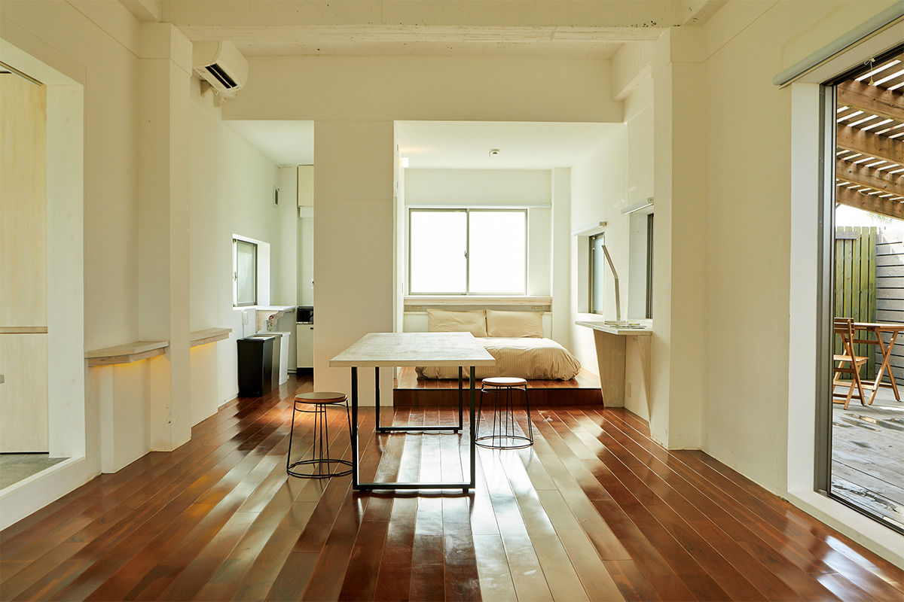
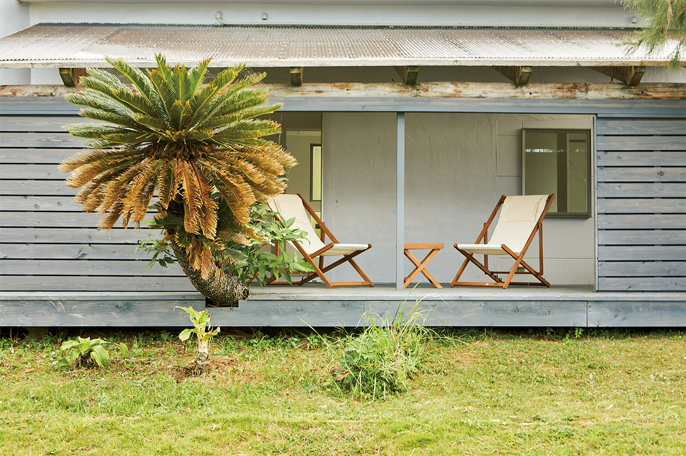
«Дэнпаку» устраивает и занятия. Например, можно попробовать «оикоми», старинный островной способ ловить рыбу: её загоняют в сеть, расставленную на мелководье. Это недалеко от «дома у черепашьего пляжа», поэтому удобно бронировать вместе с ночлегом. В 2023 году участие стоило 4000 иен со взрослого.
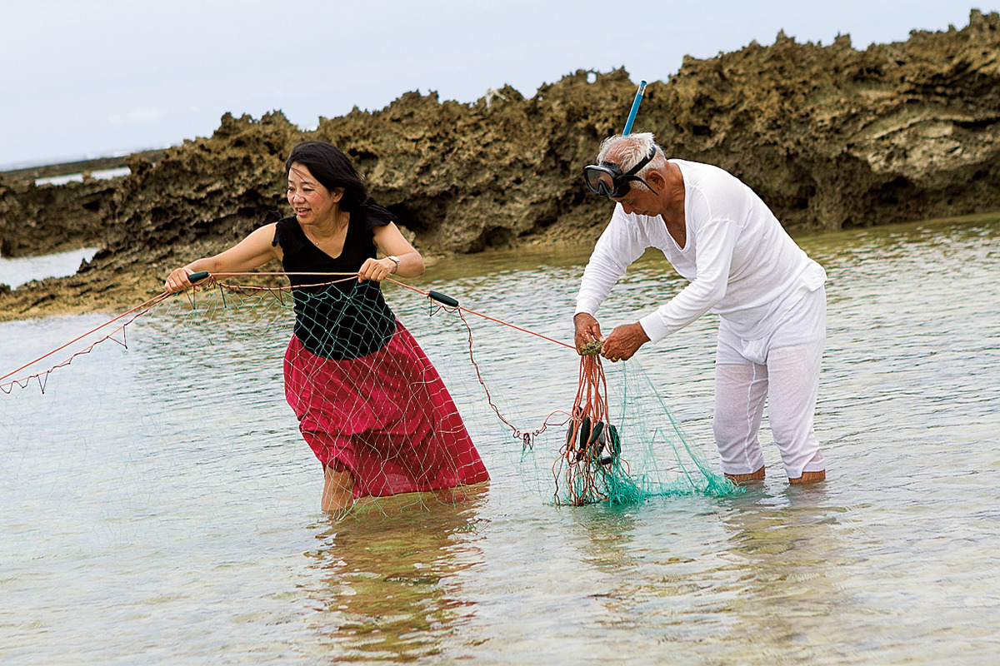
«Дэнпаку» (Токуносима)
- Адрес
- префектура Кагосима, уезд Осима, посёлок Амаги и другие места острова
- Телефон
- +81 997-63-1910
- Номера
- 6 домов на Токуносиме
- Цены / Вход
- от 6600 иен за ночь с налогом и сервисом; оплата картой заранее; «оикоми» 4000 иен со взрослого, по записи
- Заезд / выезд
- 15:00 / 10:00
- Как добраться
- 10–40 минут на машине от аэропорта Токуносима
- Сайт
- den-paku.com
Скала Инно-дзёфута смотрит на Восточно-Китайское море. Поднятый коралловый риф веками размывало волнами, и получились обрывы и скала с двумя арками, «очки». По преданию, во время страшного голода сюда бросали в море одичавших собак, нападавших на людей и скот.
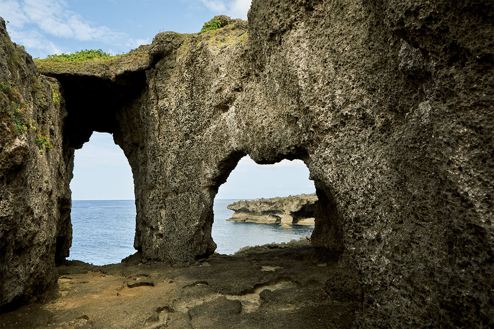
Инно-дзёфута
- Адрес
- префектура Кагосима, уезд Осима, посёлок Амаги, Канэку
Люди
«Юи» и «накусами»: за столом с островитянами
Если ездить по острову и разговаривать с людьми, быстро понимаешь, что в основе здешней жизни две идеи: «юи» и «накусами». Лучший на острове итальянский ресторан Bistro Nova Costa открылся в октябре 2021 года. Его держит супружеская пара, которая одновременно разводит скот.
«Дух взаимопомощи, юи, передаётся у нас из поколения в поколение. Я тоже хочу благодарить людей с острова и с материка и через ресторан связывать людей друг с другом»
владелец Bistro Nova Costa
Вокруг хозяина собираются друзья, знакомятся между собой, и из этого постоянно что-то рождается. Ресторан стал для острова местом встреч, и вечером здесь шумно и весело. Фирменные блюда: щёки японской чёрной говядины, тушёные в красном вине (2800 иен в 2023 году), и стейк из той же говядины.
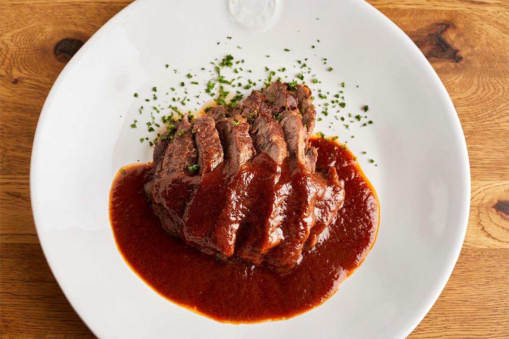
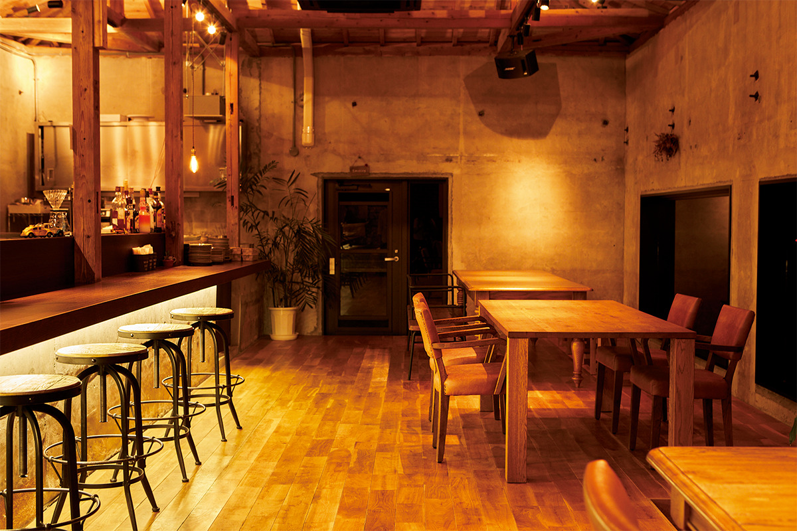
Bistro Nova Costa
- Адрес
- префектура Кагосима, уезд Осима, посёлок Амаги, Мацубара, 3109-2
- Телефон
- +81 90-1013-8546
- Часы работы
- 18:00–23:00, по предварительной записи
- Выходные
- нерегулярно
В «Ядури» хозяйка встречает гостей просто и по-домашнему, и после её еды понимаешь, какой должна быть островная кухня. На вопрос о секрете она смеётся: «Соль вкусная, вот и всё!» Соль здесь крупная, из коралловой отмели, и её можно попробовать сделать самому.
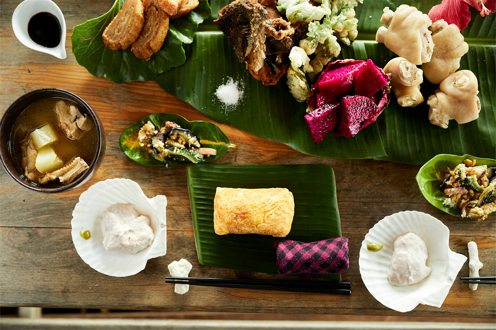
«Ядури»
- Адрес
- префектура Кагосима, уезд Осима, посёлок Исэн, Инутабу, 1586
- Телефон
- +81 997-86-9341
- Часы работы
- 12:00–18:00, по предварительной записи
- Выходные
- нерегулярно
В той же деревне Инутабу в 2021 году работала закусочная «Сима-дзикан» с местной кухней, в которой ищут секрет долголетия: рисовый шарик со свиным мисо, завёрнутый в омлет, темпура из травы тёмэйсо, «травы долгой жизни», и свиные ножки, полные коллагена.
«Сима-дзикан»
- Адрес
- префектура Кагосима, уезд Осима, посёлок Исэн, Инутабу, 128
- Телефон
- +81 997-86-9341
- Часы работы
- 12:00–18:00
- Выходные
- вторник
Чтобы глубже понять здешнюю жизнь, стоит знать слово «накусами». Женщина, которая много лет сохраняет и передаёт традицию чая фуритя, объясняет его так:
«Накусами изначально значит „утешать“. После сбора урожая было принято отдыхать: смотреть бои быков, петь островные песни. И фуритя, думаю, была для островитян таким же отдыхом после утренней работы в поле»
хранительница традиции фуритя
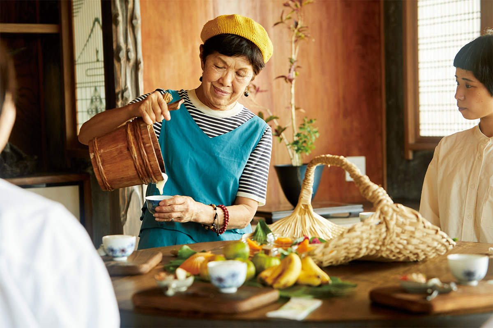
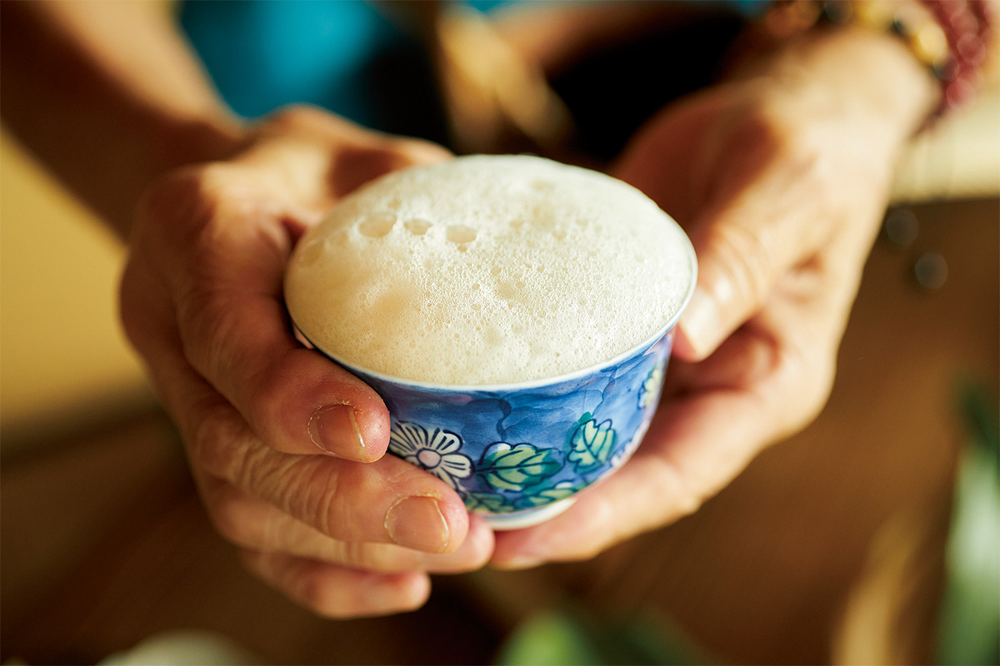
Фуритя это чай с обжаренным неочищенным рисом, который взбивают особым венчиком до пены. В посёлке Исэн его признали традиционным культурным достоянием. Попробовать можно в усадьбе Маэсато в Агоне: дом сохранил облик начала эпохи Сёва (1926–1989), и жители считают его символом деревни. В 2023 году участие стоило 1500 иен.
Усадьба Маэсато (фуритя)
- Адрес
- префектура Кагосима, уезд Осима, посёлок Исэн, Агон, 621
- Телефон
- +81 90-2854-7525
- Часы работы
- 11:30–14:00, по предварительной записи
- Выходные
- понедельник, пятница
- Цены / Вход
- 1500 иен
Тогю
Бои быков: 400 лет страсти
Токуносиму называют островом боёв быков, «тогю». Здесь сходятся быки весом около тонны, и стоит один раз увидеть этот поединок, чтобы понять, почему от него не могут оторваться. Традиции около 400 лет, и на турниры съезжается весь остров.
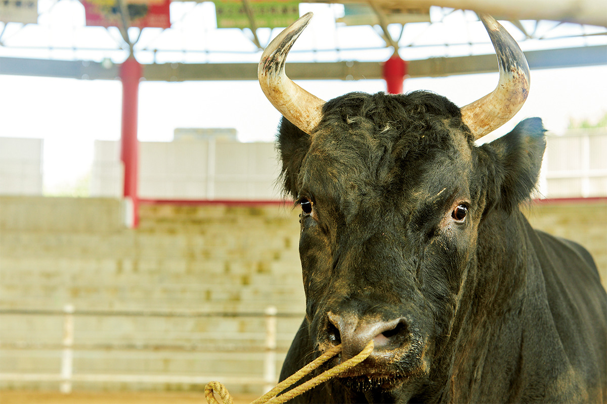
Главная арена острова «Накусами-кан» стоит в посёлке Исэн и накрыта куполом. В 2021 году здесь проводили около 20 турниров в год: на Новый год, в «Золотую неделю», на праздник Обон. На главные турниры всего острова в январе, мае и октябре приезжают не только островитяне, но и любители боёв из Кагосимы, с Окинавы и со всей Японии. Вечерами и по воскресеньям часто идут тренировочные бои, а рядом с ареной есть музей тогю.
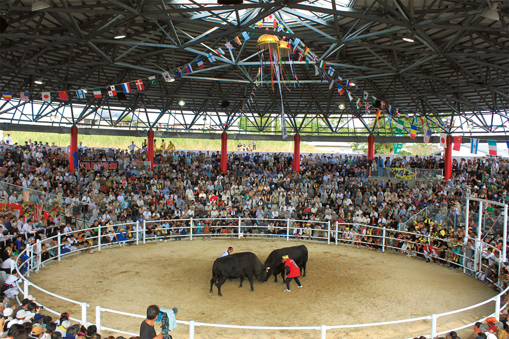
Даже когда боёв нет, купол можно осмотреть. Нам повезло застать тренировку быка, а на вечернем берегу, бывает, встречаешь быков на прогулке.
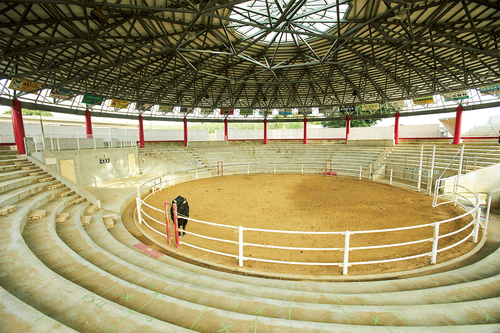
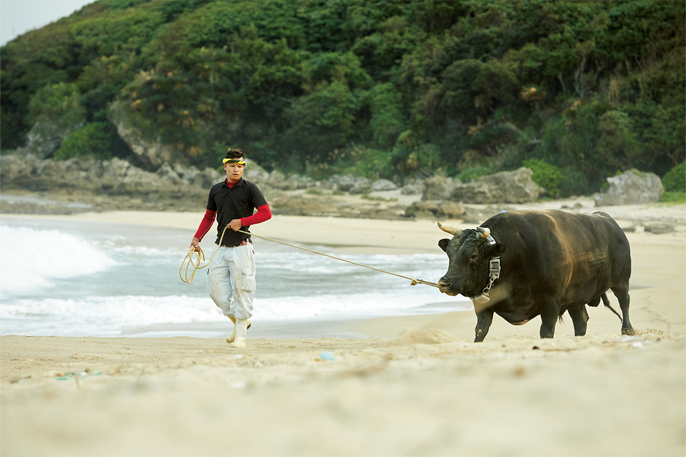
«Накусами-кан»
- Адрес
- префектура Кагосима, уезд Осима, посёлок Исэн, Мэтэку, 626
- Телефон
- +81 997-86-2093
- Часы работы
- свободный вход; время и цены турниров зависят от события
- Выходные
- понедельник
- Цены / Вход
- музей тогю 200 иен
Подойти к быку совсем близко можно на экскурсии в посёлке Токуносима: быка водят на прогулку, с ним можно пообщаться. Быки очень умные и вне боя удивительно спокойные. Хозяин относится к ним как к членам семьи, и в день нашего визита ребёнок-первоклассник, вернувшись из школы, первым делом пошёл чистить хлев. В 2023 году экскурсия на 1–1,5 часа стоила от 4000 иен.
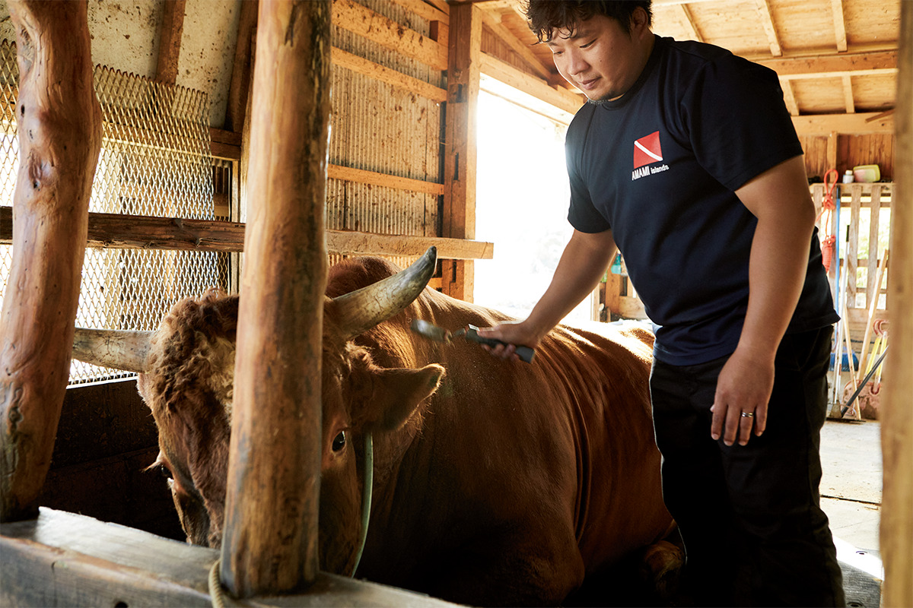
Экскурсия «Знакомство с боевым быком»
- Адрес
- префектура Кагосима, уезд Осима, посёлок Токуносима, окрестности Кэдоку
- Телефон
- +81 80-3903-2704
- Часы работы
- будни с 15:00, выходные и праздники весь день, по предварительной записи
- Цены / Вход
- от 4000 иен (1–1,5 часа)
Ещё
Где жить у моря и что посмотреть
Если хочется классического отдыха у моря, есть отель «Сансэтто ризото Токуносима» на пляже Ёнама в посёлке Амаги. Это единственный на острове отель с отдельными коттеджами, уютный и домашний, среди моря и гор. Здесь единственная на острове большая баня с панорамным видом и сауна: из открытой ванны видно, как солнце садится в море. Рядом морской центр, где можно попробовать каноэ и сапборд.
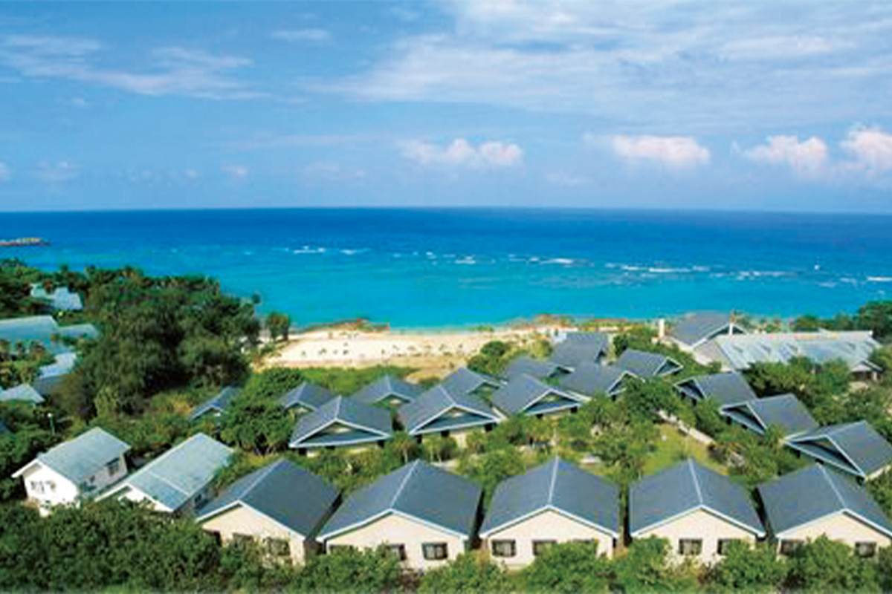
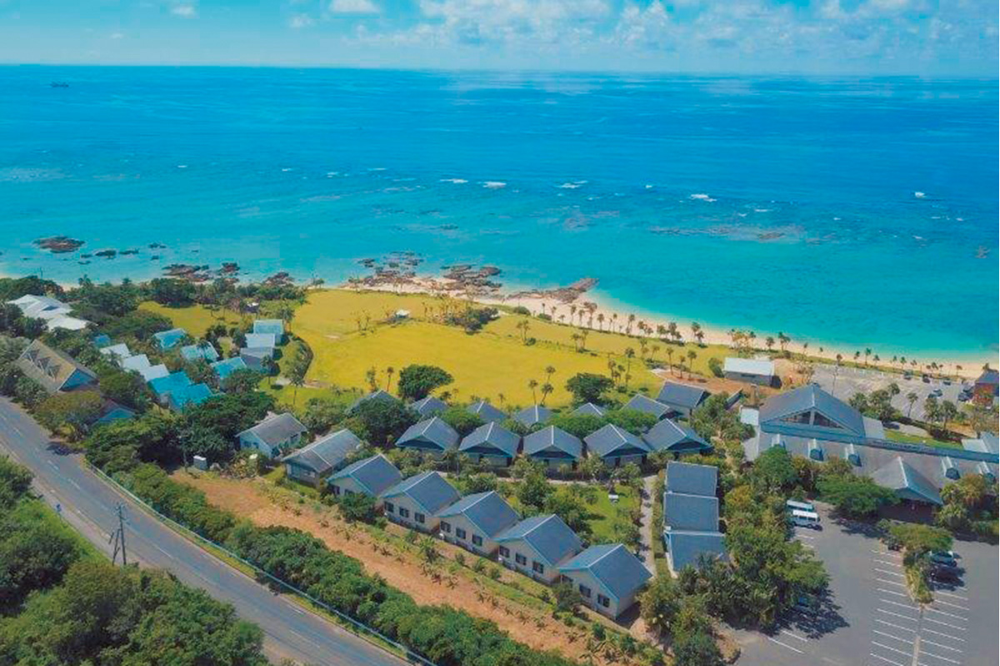
«Сансэтто ризото Токуносима»
- Адрес
- префектура Кагосима, уезд Осима, посёлок Амаги, Ёнама, 610-1
- Телефон
- +81 997-85-2349
- Номера
- 70
- Цены / Вход
- от 6800 иен за ночь без питания, с налогом и сервисом
Музей истории и народного быта посёлка Исэн занимает здание бывшей сельскохозяйственной школы. Экспозиция разделена на природу, предметы быта и археологию. Особенно интересны пресс для сахарного тростника и видеозаписи островных песен: такого больше нигде не увидишь. В 2023 году билет для взрослых стоил 200 иен.
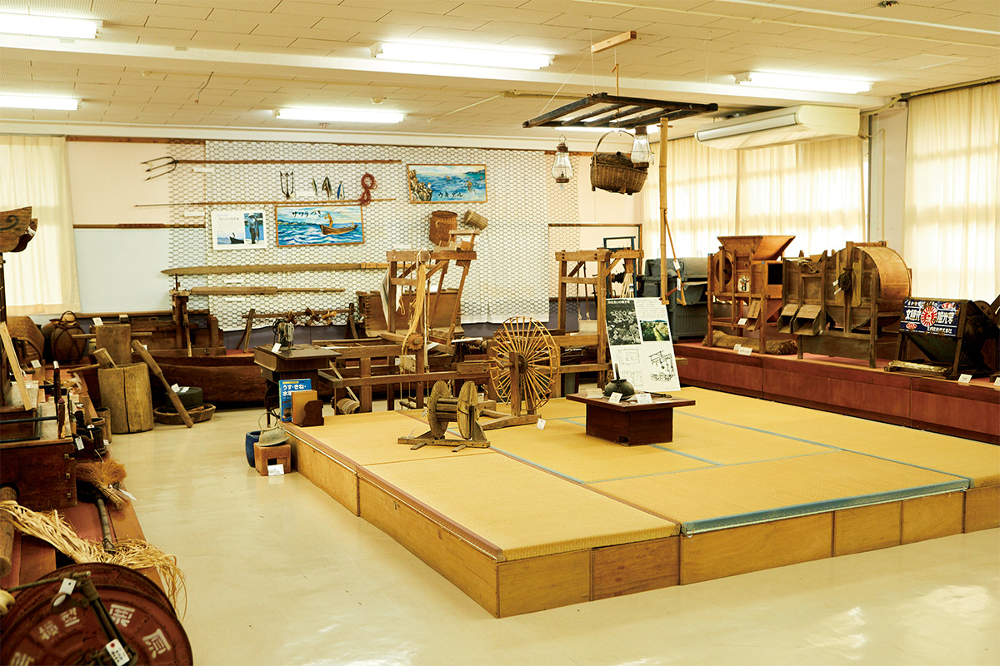
Музей истории и народного быта посёлка Исэн
- Адрес
- префектура Кагосима, уезд Осима, посёлок Исэн, Исэн, 2945-3
- Телефон
- +81 997-86-4183
- Часы работы
- 9:00–16:30
- Выходные
- понедельник (если праздник, то на следующий день)
- Цены / Вход
- взрослые 200 иен, старшеклассники и студенты 100 иен, школьники 50 иен
Как добраться до Токуносимы
- Как добраться
- самолётом из аэропорта Кагосимы около 1 часа, из аэропорта Амами около 30 минут; паромом из порта Кагосимы до порта Камэтоку около 15 часов 10 минут, из Кония на Амами-Осиме до порта Хэтоно около 2 часов 20 минут, из Нахи до Камэтоку около 9 часов 30 минут
Фото: Кэндзи Окадзаки.